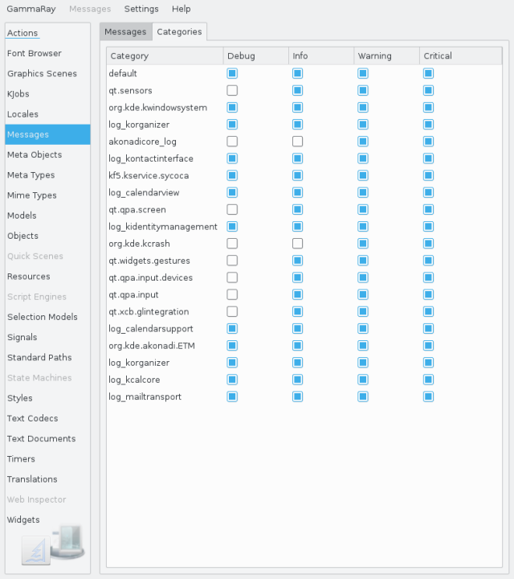

The Messages tool allows you access to diagnostic messages sent via QDebug, as well as to configure QLoggingCategory settings dynamically at runtime.
The message browser shows you all diagnostic messages of the target using a QLoggingCategory that is active on the target. Here you can:
The logging category configuration shows all QLoggingCategory instances detected on the running target, as well as their current configuration.

Here you can enable or disable individual logging categories at runtime, which takes immediate effect. This is particularly useful to only enable output of high-volume diagnostics for a short period of time.
The following examples make use of the debug message browser: